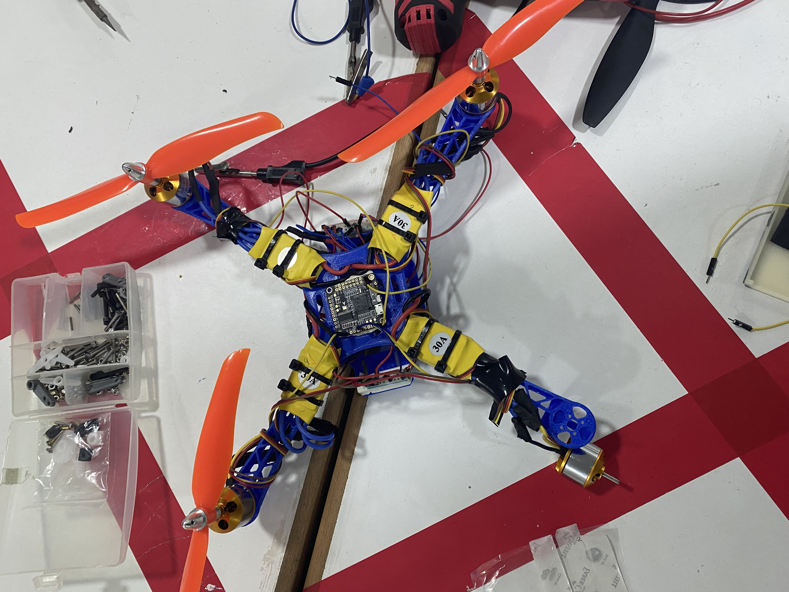
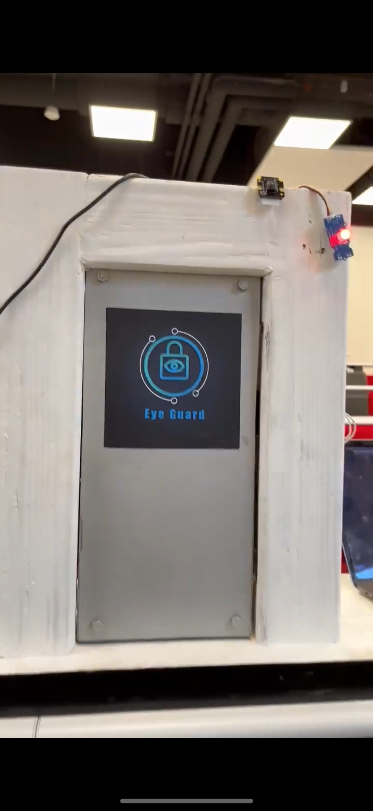
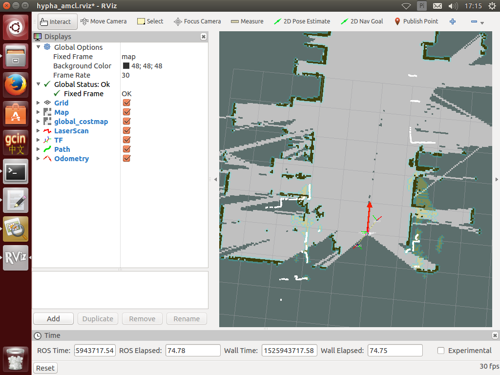

⭐ Projects

Quadrotor Supervisor
Drone project with Arduino, Python and 3D printing. Focus on control & automation.

Cloud Microservices POC
Designed and deployed a secure microservices platform on Azure AKS with Terraform, Azure DevOps pipelines, and integrated services (SQL DB, Key Vault, Service Bus).

SmartDoor FaceID
Edge AI project with Raspberry Pi, OpenCV and MQTT for secure door access.

Industrial IHM
GUI developed for embedded nuclear sensors. Expertise in C++/C, Python and ROS environments.